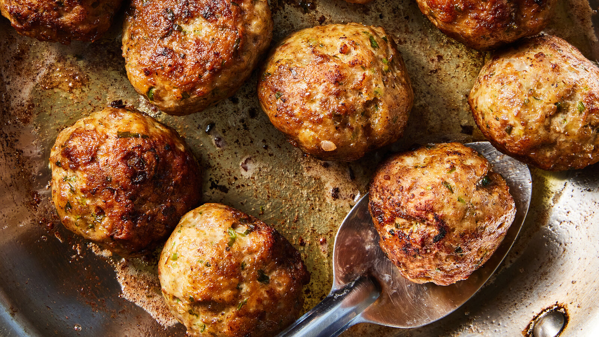

Meatballs with Any Meat

A foolproof base ratio for great meatballs from any ground meat — season and cook to suit your taste.
· · · Method · · ·
1 lb / 450gground meat (pork, beef, veal, chicken, turkey or a combination)½ cuppanko bread crumbs1egg1 tspkosher salt, more as needed- black pepper and/or ground cumin, curry powder, chile flakes, garam masala, etc., to taste
- minced garlic, onion, scallions or shallot
- chopped parsley, basil or cilantro
- olive oil, for frying (optional)
In a large bowl, gently combine all ingredients. Roll into 1½-inch balls. Transfer to a baking sheet.
Broil until golden and firm, 7 to 10 minutes. Or fry in oil until deeply browned all over. Sprinkle with more salt before serving.